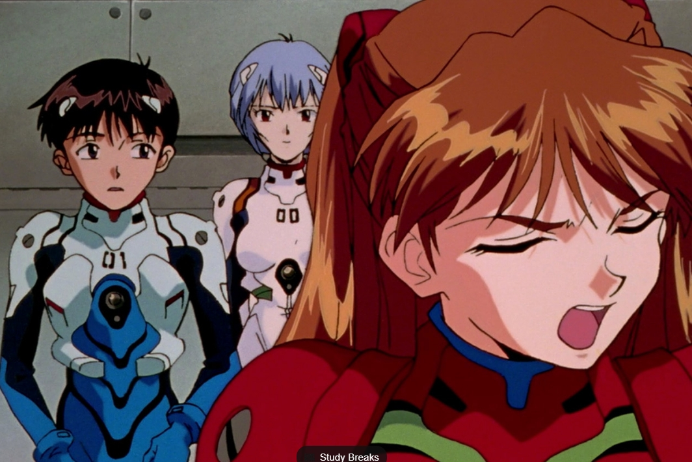
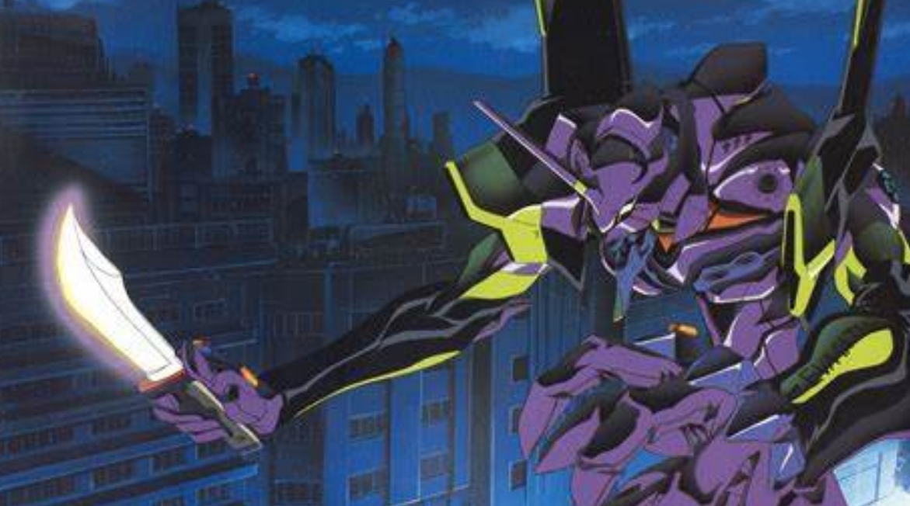

"Neon Genesis Evangelion" is a Japanese animation work jointly produced by GAINAX and Tatsunoko Studio,
referred to as EVA. It premiered on TV Tokyo in Japan from October 4, 1995 to March 27, 1996, with a
total of 26 episodes. Hideaki Anno serves as the main screenwriter and chief director, Yoshiyuki
Sadamoto serves as the character designer, and Emi Ogata, Emi Hayashihara, Yuko Miyamura, Kotono
Mitsuishi and others serve as the main voice actors. The work is set in the world of 2015 when the
"Second Impact" disaster occurred. It mainly tells the story of 14-year-old boys and girls who control
the giant general-purpose humanoid decisive battle weapon "EVA" and the mysterious enemy who attacks the
third city of New Tokyo. The story of the battle between the Apostles. Along with "Space Battleship
Yamato" in the 1970s and "Mobile Suit Gundam" in the 1980s, the film became a third-generation animation
work that influenced later generations of animation works and triggered an animation boom. In 1997, the
theatrical version of the anime "Neon Genesis Evangelion Air/My Heart to You", which was different from
the ending of the TV anime series (the 25th and final episode), was released.

The story describes an account of the "Second Impact". In 2000 AD, a huge meteorite fell near the
Antarctic iceberg (acclaimed by the government). The high temperature caused part of the ice to melt,
which also caused the global water level to rise. Natural and man-made disasters followed one after
another, and a new invasion appeared in 2015 AD. A huge human-like mechanical battle group, people call
them "apostles", probably implying that they are messengers sent by God to destroy the evil-doing human
beings. The various military weapons currently available to mankind are of no use to the apostles. For
this reason, the political center of the earth at that time decided to reuse the organization NERV. They
used the most sophisticated technology and spent huge sums of money to develop a system that directly
uses the driver's nerves. A controlled "general-purpose humanoid decisive weapon", this high-tech
product precisely integrates the driver and the machine, and controls the EVA through will and body
reactions. However, because these technologies were still in the research and development stage at the
time, there were many obstacles that could not be overcome immediately. And because not everyone can
drive EVA freely. Driver candidates have always been the biggest headache for NERV. Not only is it
difficult to find qualified people, but it also requires several months of training to achieve the basic
ability to synchronize activities with EVA. Then, three boys and girls were discovered in the world who
could drive EVA, and people placed their hopes on them.